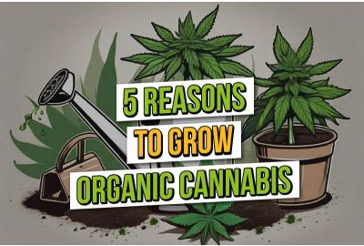

Gründe für die Legalisierung
- Schwarzmarkt verringern: Weniger illegaler Handel, bessere Qualitätskontrolle.
- Gesundheitsschutz: Weniger verunreinigtes Cannabis im Umlauf, gesünder für Konsumenten.
- Polizei entlasten: Polizei kann sich auf andere Verbrechen konzentrieren.
- Wirtschaftliche Vorteile: Staatliche Einnahmen durch Steuern für Bildung und Gesundheit.
- Jugendschutz: Bessere Kontrolle zur Erschwerung des Zugangs für Jugendliche.
Gesetzliche Regeln
- Gesetzesänderung: Besitz von bis zu 25 Gramm erlaubt (seit 1. April 2024).
- Eigenanbau: Erwachsene dürfen bis zu drei Pflanzen anbauen.
- Anbauvereinigungen: Gemeinschaftlicher Anbau ab 1. Juli 2024 erlaubt, kein Verkauf.
- Importverbot: Cannabis-Import aus anderen Ländern ist verboten.
- Werbeverbot: Werbung für Cannabis ist nicht erlaubt.
Gesundheitliche Aspekte
- Psychische Gesundheit
- Körperliche Gesundheit
- Rauchgefahr
- Prävention
Wirtschaftliche Auswirkungen
- Steuereinnahmen: Der Staat kann durch Besteuerung erhebliche Einnahmen erzielen.
- Arbeitsplätze schaffen: Legalisierung schafft neue Jobs und Unternehmen.
- Marktregulierung: Regulierte Märkte bieten sichere und hochwertige Produkte.
- Forschung fördern: Legalisierung ermöglicht mehr Forschung über Cannabis.
- Internationale Vergleiche: Positive wirtschaftliche Effekte in anderen Ländern zeigen Erfolg.
Fazit zur Legalisierung von Cannabis
- Legalisierung von Cannabis kann gefährlich für die Gesellschaft sein
- Mögliche Zunahme des Konsums
- Gefahr für die öffentliche Sicherheit
- Höheres Risiko von Unfällen
- Mehr rechtliche Probleme
- Psychische Probleme bei Konsumenten
- Angstzustände
- Depressionen
- Wirtschaftliche Vorteile möglicherweise gering
- Berücksichtigung der gesellschaftlichen Kosten